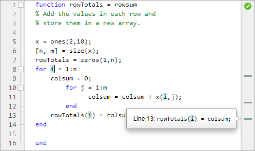
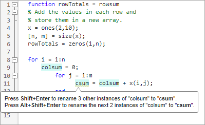

Find and Replace Text in Files and Go to Location
Find and replace text in the current file or multiple files, automatically rename variables or functions, and go to a location in a file.
Find and Replace Any Text in Current File
You can search for, and optionally replace, any text within a file open in the
Editor or Live Editor. To search for text in a file, on the
Editor or Live Editor tab, in the
Navigate section, click  Find. You also can use the Ctrl+F keyboard
shortcut.
Find. You also can use the Ctrl+F keyboard
shortcut.
In the Find and Replace dialog box, enter the text that you want to search for and
then use the  and buttons to search backward or forward through the
file. You also can use the Shift+F3 and F3
keyboard shortcuts. To show a list of previous searches, use the Down
Arrow key.
and buttons to search backward or forward through the
file. You also can use the Shift+F3 and F3
keyboard shortcuts. To show a list of previous searches, use the Down
Arrow key.
Select a search option to change how the Editor and Live Editor search for text.
| Option | Description | Keyboard Shortcut |
|---|---|---|
| Search only for text with the precise case of the search text. | Alt+M | |
| Search only for exact full-word matches. | Alt+W | |
| Regular expression | Search using a regular expression. For example, to find
all the words in a file that contain the letter
To create
a capture group, surround the characters that you want to
group with parentheses. Then, to access the capture group
within the regular expression, use the format
To
create a named capture group, use the format
Multiline
search, including the use of the control characters
| Alt+X |
| Find in selection | Search only for text in the current selection. | Alt+S |
To replace text in the file, click the Show replace options button to the left of the search field to open the replace options. Then, enter the text that you want to replace the search text with and use the Replace and Replace All buttons to replace the text. You also can use the Alt+R and Alt+A keyboard shortcuts. To show a list of previous replacements, use the Down Arrow key.

Configure Find and Replace Behavior
You can change how the Find and Replace dialog box searches for text as well as it's location. On the Home tab, in the Environment section, click Settings. Select MATLAB > Editor/Debugger > Find and Replace and adjust the settings as needed. For more information, see Editor/Debugger Settings.
Before R2025a: Change the behavior of the Find and
Replace dialog box programmatically using
matlab.editor settings. For example, this code
disables the wrap-around search behavior in the Find and Replace dialog box. For
more information, see matlab.editor Settings.s = settings;
s.matlab.editor.find.WrapAround.PersonalValue = 0;
Find and Replace Functions or Variables in Current File
In the Editor and Live Editor, you can find all references to a particular function or variable in a file by selecting an instance of that function or variable. When you select an instance, MATLAB® automatically highlights all other references of that function or variable in teal blue. In addition, MATLAB adds a marker for each reference in the indicator bar. To see what line number a marker in the indicator bar represents, hover over it. To navigate to the function or variable reference indicated by the marker, click the marker.
Note
If the indicator bar contains a code analyzer marker and a variable marker for the same line, the variable marker takes precedence.
Finding functions and variables using automatic highlighting is more efficient than using text-finding tools because when using automatic highlighting, MATLAB finds references only to that particular function or variable, not other occurrences. For example, it does not find instances of the function or variable name in comments. Furthermore, MATLAB finds references only to the same variable. That is, if two variables use the same name, but are in different scopes, highlighting one does not cause the other to highlight.
For example, if you select the first instance of the variable i
in the rowTotals function, MATLAB highlights that instance and the two other instances of
i. In addition, MATLAB displays three variable markers in the indicator bar.

To disable automatic highlighting of functions and variables, go to the
Home tab and in the Environment
section, click  Settings. In MATLAB > Colors > Programming Tools, clear the Automatically highlight option.
Settings. In MATLAB > Colors > Programming Tools, clear the Automatically highlight option.
Automatically Rename All Variables or Functions in a File
You can automatically rename multiple references to a variable or function within a file when you rename any of the following:
| Variable or Function Renamed | Example |
|---|---|
Function name in a function declaration | Rename
|
Input or output variable name in a function declaration | Rename
|
Variable name on the left side of assignment statement (Except global variable names) | Rename
|
When you rename a variable or function, if there is more than one reference to that variable or function in the file, MATLAB prompts you to rename all instances by pressing Shift+Enter. You also can rename only the instances from the current cursor location to the end of the file by pressing Alt+Shift+Enter. On macOS, use Option+Shift+Enter instead. (Typically, multiple references to a function in a file occur only when you use nested functions or local functions.)

To undo automatic name changes, click the button in the quick access toolbar once.
Automatic variable and function renaming is enabled by default. To disable it, on the Home tab, in the Environment section, click Settings. Select MATLAB > Editor/Debugger > MATLAB Language. Then, clear the Enable automatic variable and function renaming setting.
Before R2025a: Select MATLAB > Editor/Debugger > Language and in the Language field, select MATLAB.
Find Text in Multiple Filenames or Files
You can find folders and filenames that include specified text, or whose contents
contain specified text, using the Find Files dialog box. To open the Find Files
dialog box, on the Editor or Live Editor
tab, in the Navigate section, click  Find
Find
 and select Find Files.
For more information, see Find Files.
and select Find Files.
For more information, see Find Files.
Go To Location in File
You can go to a specific location in a file, set bookmarks, navigate backward and forward within the file, and open a file or variable from within a file.
Navigate to a Specific Location
This table show how to navigate to a specific location in a file open in the Editor and Live Editor.
| Go To | Instructions | Notes |
|---|---|---|
Line Number | On the Editor or Live
Editor tab, in the
Navigate section, click
Go To
| None |
Function definition Method | On the Editor or Live
Editor tab, in the
Navigate section, click
Go To
| Includes local functions and nested functions. For both class and function files, the functions list in alphabetical order — except that in function files, the name of the main function always appears at the top of the list. |
Code Section | On the Editor or Live
Editor tab, in the
Navigate section, click
Go To
| For more information, see Create and Run Sections in Code. |
Bookmark | On the Editor or Live
Editor tab, and in the
Navigate section, click
Bookmark
| For information about setting and clearing bookmarks, see Set Bookmarks. |
Set Bookmarks
You can set a bookmark at any line in a file in the Editor and Live Editor so that you can quickly navigate to the bookmarked line. Bookmarks are particularly useful in long files. For example, suppose that while working on a line, you want to look at another part of the file and then return. Set a bookmark at the current line, go to the other part of the file, and then use the bookmark to return.
To set a bookmark in the Editor and Live Editor, position the cursor on the line that you want to add the bookmark to. Then, go to the Editor or Live Editor tab, and in the Navigate section, click Bookmark. To clear the bookmark, click Bookmark again. You also can click the bookmark icon to the left of the line.
Starting in R2021b, MATLAB maintains bookmarks after you close a file.
Navigate Backward and Forward in Files
In the Editor and Live Editor, you can access lines in a file in the same
sequence that you previously navigated or edited them. To navigate backward and
forward in sequence, on the Editor or Live
Editor tab, in the Navigate section, click
the  and buttons. Alternatively, you can use the
Alt+Left Arrow and Alt+Right Arrow
keyboard shortcuts. On macOS systems, use Ctrl+Minus (-) and
Ctrl+Shift+Minus (-).
and buttons. Alternatively, you can use the
Alt+Left Arrow and Alt+Right Arrow
keyboard shortcuts. On macOS systems, use Ctrl+Minus (-) and
Ctrl+Shift+Minus (-).
Editing a line or navigating to another line using the list of features described in Navigate to a Specific Location interrupts the backward and forward sequence. Once the sequence is interrupted, you can still go to the lines preceding the interruption point in the sequence, but you cannot go to any lines after that point. Any lines that you edit or navigate to after interrupting the sequence are added to the sequence after the interruption point.
For example, open a file containing more than 6 lines and edit lines 2, 4, and
6. Click the  button to return to line 4, and then again to
return to line 2. Click the button to return to line 4. Edit line 3. This
interrupts the sequence. You can no longer use the button to return to line 6. You can, however,
click the
button to return to line 4, and then again to
return to line 2. Click the button to return to line 4. Edit line 3. This
interrupts the sequence. You can no longer use the button to return to line 6. You can, however,
click the  button to return to line 2.
button to return to line 2.
Open a File or Variable from Within a File
You can open a function, file, variable, or Simulink® model from within a file in the Editor or Live Editor. Position the cursor on the name, right-click, and select Open selection. The Editor or Live Editor performs an action based on the selection, as described in this table.
Item | Action |
|---|---|
Local function | Navigates to the local function within the current
file, if that file is a MATLAB code file. If no function by that name exists
in the current file, the Editor or Live Editor runs the
|
Text file | Opens in the Editor. |
Figure file ( | Opens in a figure window. |
MATLAB variable that is in the current workspace | Opens in the Variables editor. |
Model | Opens in Simulink. |
Other | If the selection is some other type, Open selection looks for a matching file in a private folder in the current folder and performs the appropriate action. |